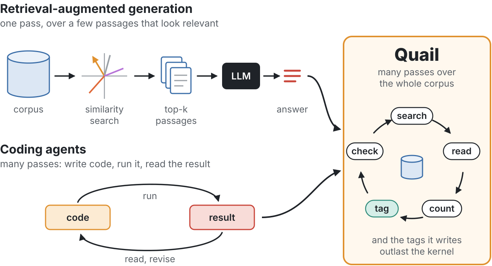
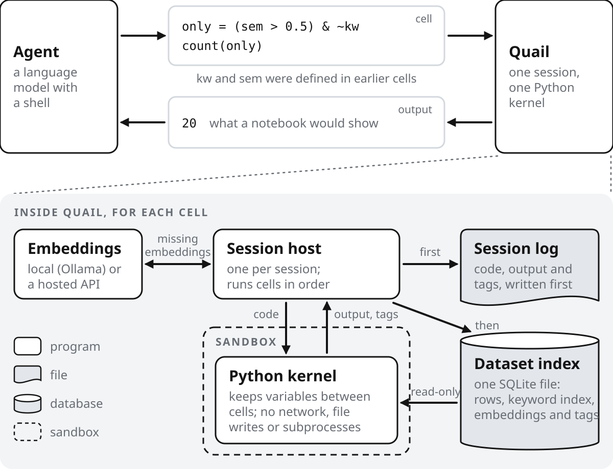
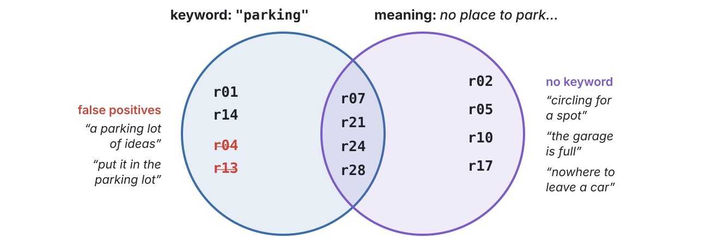
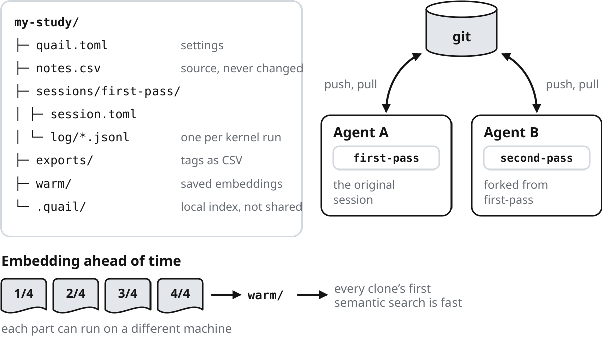
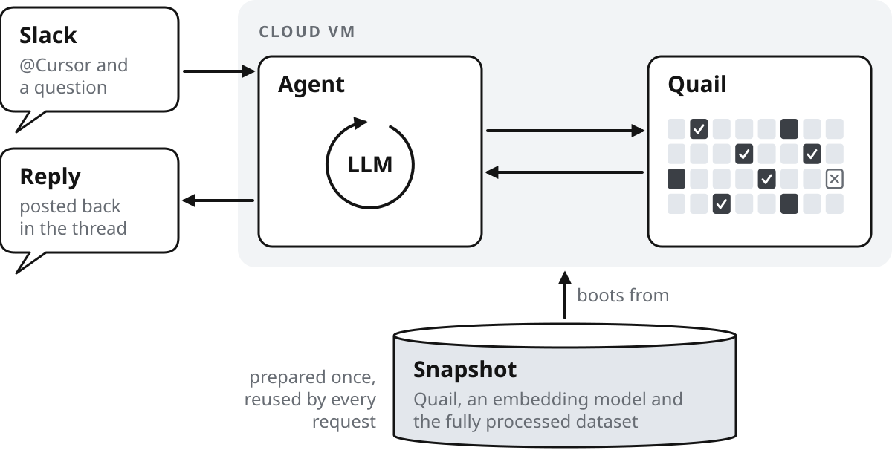
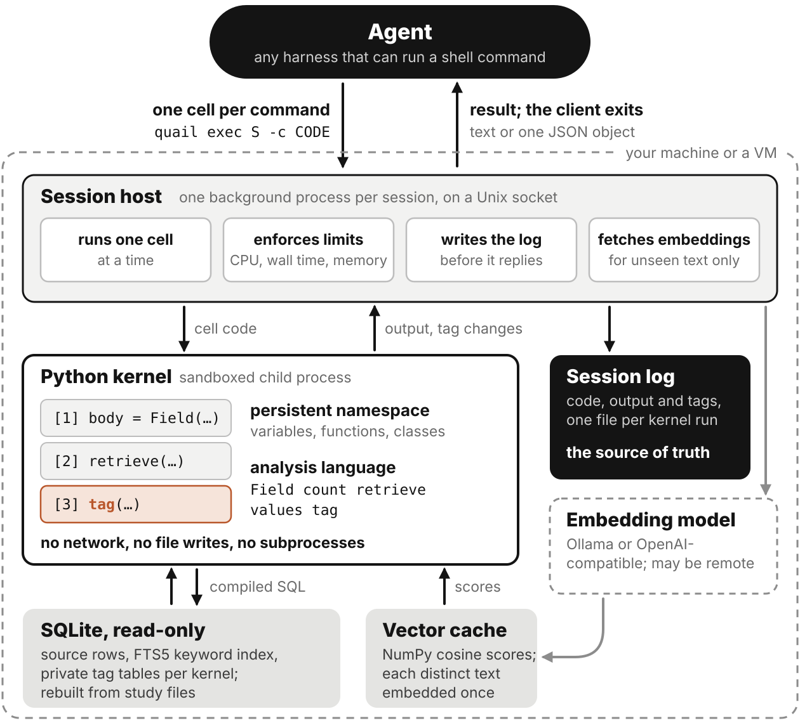
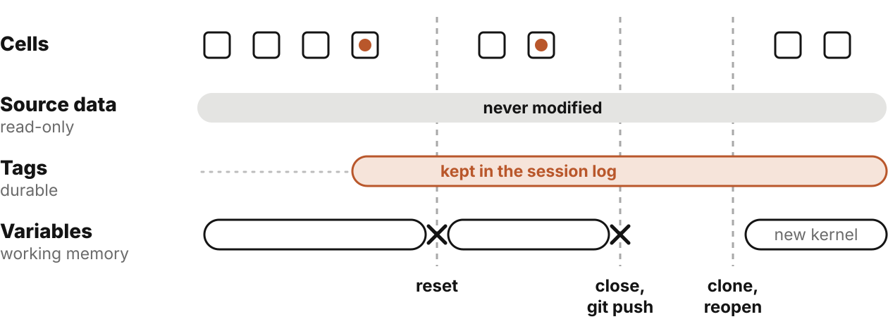

QuailAn Environment for Agentic Qualitative Analysis
Dashiell Coyier · DataSquad, Carleton College · coyierd@carleton.edu
github.com/dcoyier/Quail Apache-2.0
1Why Quail
Campus offices often collect open-ended survey answers and then only skim them, because nobody has time to read hundreds closely.1 Retrieval-augmented generation2 answers from a handful of passages, but qualitative coding, labeling passages with themes, has to cover the whole corpus.

As in Cloudflare’s Code Mode,3 the agent writes code that calls its tools, then reads the result and decides what to run next.
2Four design choices

1The tool
The agent’s one tool is quail exec, which runs a Python cell with a small analysis language.
2The environment
It works in a study, a directory with the source CSVs, a short config file and each session’s log.
3What it can change
It can only write tags, in its own session. The kernel has no network, file writes or subprocesses.
4What comes back
It gets what a notebook would show: printed output, the last value or a traceback, up to 64 KiB by default.
4Example: coding survey responses
ASearch for the word and read every match
body = Field("body")
word = body.lexical("parking") > 0
for e inretrieve(word):
print(e.id, e["body"][:58])
r01 The parking permit went up again this year and nobody expl
r04 Our team keeps a parking lot of ideas on the whiteboard, wfalse match
r07 Parking enforcement ticketed me while I was unloading equi
r13 When a meeting runs long, the chair says to put it in the false match
r14 The parking permit portal logged me out three times before
r21 Visitors complain that they cannot find parking for interv
r24 Accessible parking spaces are often taken by service vehic
r28 I get to work at seven just to be sure I have a place to p
BSearch for the meaning, skipping what the word found
meaning = body.semantic("no place to park near the building") > 0.52
for e inretrieve(meaning & ~word):
print(e.id, e["body"][:58])
r02 I spend fifteen minutes every morning circling for a spot
r05 The garage is full by 8:30 so I end up walking in from the
r10 There is nowhere to leave a car close to the building if y
r17 I would come in more often if I could reliably find somewh
CTag both sets, drop the false matches, count by department
Thirty invented answers to a staff survey question, “Is there anything else you’d like to tell us?” The agent is asked how many people raised parking, and in which departments. Each box is one quail exec call with its real output.

The keyword search takes parking lot literally. The semantic search finds complaints that never use the word, but its scores sit close together (0.53 for r05, 0.50 for a complaint about air conditioning), so the agent has to check any cutoff by reading.
6Studies live in git
A study is a directory of plain text. Each kernel run writes its own log file, so agents working in parallel don’t overwrite each other’s history, and a new session can fork a closed one to try another coding scheme.

7Where Quail runs
Quail runs beside the agent, on a laptop or a cloud VM. Its first real study, Allen-News, covers TV news transcripts from six U.S. election years.

Dashiell Coyier#quail-allen-news
@Cursor how is Obama characterized?
Cursor27 minutes later
“The portrait moves from rising uniter (2004), to a fight over whether he is a historic, gifted candidate or an unready celebrity (2008) … and by 2024 to a celebrated speaker.”
3How a cell runs
The first quail exec in a session starts a host that keeps a Python kernel alive between commands. Queries compile to SQL inside the kernel, and every cell is written to the session log before the agent sees its reply. The SQLite index is only a cache, rebuilt from the study’s files when needed.

5What persists
The source CSV is never modified. Tags commit with the cell that wrote them, all or nothing, and outlast the kernel; variables do not.

After step C, the agent resets its kernel.$ quail exec first-pass --reset
Reset kernel for 'first-pass'; committed tags retained.
$ quail exec first-pass -c 'count(by=Field("topic"))'
Counter({None: 20, 'parking': 10})
$ quail exec first-pass -c 'word'
NameError: name 'word' is not defined. Did you mean: 'ord'?
8Status and next steps
Quail 0.94 is an alpha release for Linux and macOS. The Allen-News study runs on cloud agents, but nothing it has produced has been evaluated yet. Next, we want to learn:
how an agent’s tags compare with a human coder’s,
when an analyst should review or revise the agent’s coding,
and what an auditor needs from the session logs.
To try it (Linux or macOS, Python 3.12+, uv):$ git clone --depth 1 https://github.com/dcoyier/Quail.git
$ cd Quail && uv sync --locked --no-dev --python 3.12
$ . .venv/bin/activate && quail init ../my-study